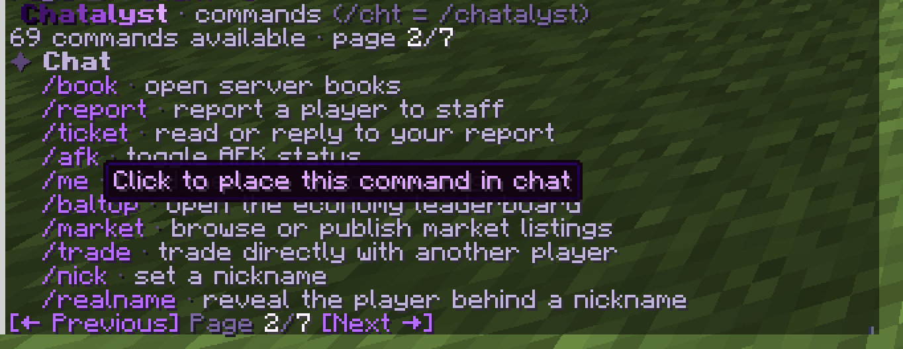

This list is built automatically from the plugin, so it always matches the version you download. Type in the box to filter it. /cht is short for /chatalyst. Want the permission nodes instead? See Permissions.
In game, /cht help shows the commands you can use, in pages. Click one to place it in your chat.

Staff tools such as /ban or /freeze are not in this table: they are registered only while the staff suite is on. Your own custom commands are not listed either.
| Command | Aliases | What it does | Permission |
|---|---|---|---|
/channel/channel [name|list|mute <name>|listen <name>|history [name]|send <name> <msg>|sendas <player> <name> <msg>] | /ch | switch chat channel | chatalyst.command.channel everyone |
/frequency/frequency [NN.NN|off] | /freq /frecuencia | tune the local radio-chat frequency | chatalyst.command.frequency everyone |
/f/f <message> | send one message to your radio frequency without leaving your channel | chatalyst.command.frequency everyone | |
/msg/msg <player> <message> | /m /w /tell /whisper | private message | chatalyst.command.msg everyone |
/reply/reply <message> | /r | reply to last PM | chatalyst.command.msg everyone |
/ignore/ignore <player> | ignore a player | chatalyst.command.ignore everyone | |
/toggle/toggle [pm|announcements|mentions|joinquit|translate] | toggle features | chatalyst.command.toggle everyone | |
/perfil/perfil | /profile | open your profile (stats, personal settings, blocked players, shortcuts) | chatalyst.command.profile everyone |
/inbox/inbox <open|spam|friends|friend|accept|deny|send|read|reply|clear> | mailbox | chatalyst.command.mail everyone | |
/me/me <action> | third-person action message | chatalyst.command.me everyone | |
/motd/motd [first] | re-show the server MOTD | chatalyst.command.motd everyone | |
/chatcolor/chatcolor [color|gradient|reset] | /color | pick your chat color | chatalyst.command.chatcolor everyone |
/book/book <name|list|new|edit|save|delete|open> | /books | open server books | chatalyst.command.book everyone |
/report/report <player> <reason> | report a player to staff | chatalyst.command.report everyone | |
/reports/reports [claim|resolve|reply|info <id>] | /reportlist | manage player reports | chatalyst.report.manage op |
/ticket/ticket [id] [message] | read or reply to your report | chatalyst.command.ticket everyone | |
/afk/afk | toggle AFK status | chatalyst.command.afk everyone | |
/baltop/baltop | /moneytop /balancetop /richest | open the economy leaderboard | chatalyst.command.baltop everyone |
/market/market [publish|sell <price>|auction <price> [min]|buy <id>|bid <id> <amount>|cancel <id>|claim|history] | /mercado /mkt | browse or publish market listings | chatalyst.command.market everyone |
/trade/trade <player>|accept [player]|deny | /intercambio /intercambiar | trade directly with another player | chatalyst.command.trade everyone |
/realname/realname <nickname> | /rn | reveal the player behind a nickname | chatalyst.command.realname op |
/nick/nick <nickname|off> | /nickname | set a nickname | chatalyst.nick op |
/itemname/itemname <name|reset> | /iname | rename the item in your hand | chatalyst.command.itemname op |
/nickcolor/nickcolor [player] [color|reset] | /nickcolour | paint your nickname in a GUI | chatalyst.nick.color op |
/tag/tag [title|off|admin] or /tag <prefix|suffix> [player] <text|off> | personal prefix/suffix | chatalyst.tag op | |
/nametagtitle/nametagtitle <title|iconleft|iconright> [player] <text|off> | /ntitle /nametagicon | set your floating nametag title or side icons | chatalyst.nametagtitle op |
/tagcontador/tagcontador <player> <key> [amount] | /tagcounter | add to (or subtract from) a player's title counter (COUNTER requirements) | chatalyst.admin.tags op |
/chatalyst/chatalyst <help [page]|commands [page]|version|reload|emojis|ranks|gui|doctor [discord]|perf|features|permissions [category] [page]|purge <player>|rule <list|toggle <rule>>|region <pos1|pos2|list|add <name>|remove <name>>|storage <status|import [--dry-run|--changed]>|store <status|give <player> <product>>|tebex <gui|status|grant <player> <rank>|revoke <player> <rank>>|sendformat <player> <format> <text>> | /cht /chy /cchat | main Chatalyst command | |
/discord/discord <link|unlink|status> | /discordlink /dclink | link your Minecraft account to Discord | |
/spy/spy [toggle|all|<player>] | /socialspy | granular social spy menu | |
/players/players | /list /playerlist /jugadores | open the online player list | |
/staffchat/staffchat <message> | /sc /a | send one message to staff chat | chatalyst.channel.staff op |
/support/support <answer <id>|close|status> | /soporte | handle a private support conversation | |
/mute/mute [-s] <player> [time] [reason] | /mutear /silenciar | mute a player | |
/unmute/unmute <player> | /desmutear /desilenciar | unmute a player | |
/say/say <message> | send a formatted server message | chatalyst.command.say op | |
/broadcast/broadcast <message> | /bc | quick broadcast (chat/title/bossbar/toast) | chatalyst.command.broadcast op |
/announce/announce | announcement composer GUI | chatalyst.command.announce op | |
/formatedit/formatedit <format> | /feditor /editformat | GUI format editor | chatalyst.command.editor op |
/clearchat/clearchat | /cc | clear the chat | chatalyst.command.clearchat op |
/chatlock/chatlock | /chatmute /mutechat | lock/unlock chat | chatalyst.command.chatlock op |
/chatunlock/chatunlock | /chatunmute /unmutechat | unlock global chat | chatalyst.command.chatlock op |
/slowmode/slowmode <seconds|off> | /slow | chat slow mode | chatalyst.command.slowmode op |
/warnings/warnings <player> [clear] | /warns /warnpoints | warning points | chatalyst.command.warnings op |
/chatlog/chatlog [player] [count] | /clog | review recent chat history | |
/containerlog/containerlog [player] [count|date] | /contlog /cofres | review container and mechanism interactions with exact coordinates | |
/itemwatch/itemwatch <scan <player>|alerts> | /dupes /vigilancia | suspicious item watch - absurd amounts, fast gains and impossible stacks (possible dupes) | |
/autoclick/autoclick [player|alerts] | /cps | autoclick detector - live CPS and click regularity of a player, recent suspects | |
/antiexploit/antiexploit [estado|avisos] | /antiexploits /exploits | anti-exploit - recent suspects, status and alert toggle | |
/itemaudit/itemaudit <staff> [page] | player <player> [page] | id <id> | hand | recent [page] | alerts | /staffitems | staff item audit - items taken from creative or given by command, who received them, and gamemode changes | chatalyst.command.itemaudit op |
/combatlog/combatlog [player...] [count|date] | /pvplog /combate | review PvP - who hit whom, with what, and who threw the first punch | |
/anonymous/anonymous [on|off] | /anon /anonimo | streamer anonymous mode - random unreadable name, no rank/tags, incognito skin | chatalyst.command.anonymous op |
/marry/marry <player> | accept | deny | /casarse /matrimonio | propose to another player and get married (opt-in feature) | chatalyst.command.marry everyone |
/divorce/divorce | /divorciarse /divorciar | end your marriage | chatalyst.command.marry everyone |
/events/events [admin] | /event /eventos | view upcoming server events | chatalyst.command.events everyone |